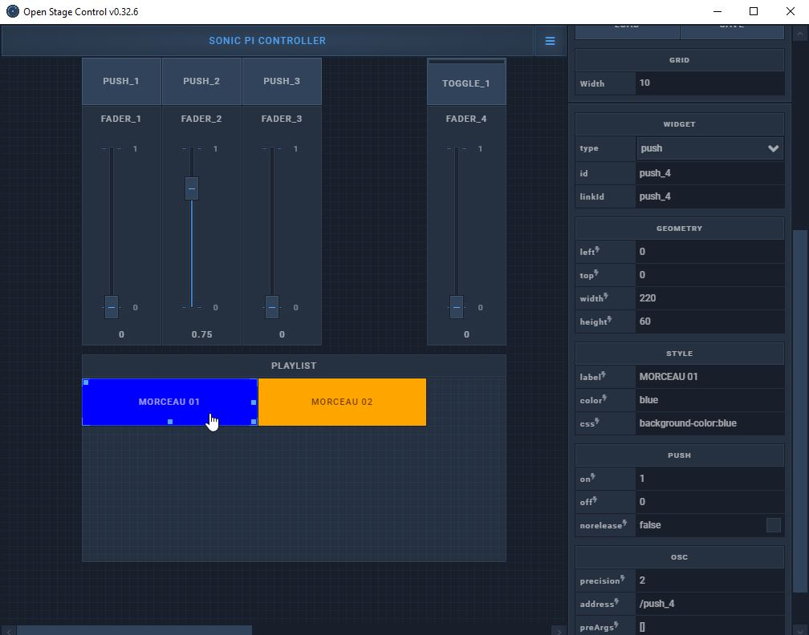

Communiquer avec Open Stage Control¶
Open stage control permet de modifier dynamiquement son interface avec des messages osc appropriés.
La documentation nous en dit un peu plus. https://osc.ammd.net/extras/remote-control/
Exemple de script pour agir sur l'interface web dynamiquement¶
1 2 3 4 5 6 7 8 9 10 11 12 13 14 15 16 17 18 19 20 21 22 23 24 25 26 27 28 29 30 31 32 33 34 35 36 37 38 39 40 41 42 43 44 | """ Test d'envoi vers open stage control d'un message osc pour changer un label dynamiquement """ import argparse import random import time import json from pythonosc import osc_message_builder from pythonosc import udp_client """ jsonData = '{"label":"New Label"}' jsonToPython = json.loads(jsonData) """ pythonDictionary = {'label':'nouveau nom', 'css':'background-color:blue'} dictionaryToJson = json.dumps(pythonDictionary) if __name__ == "__main__": parser = argparse.ArgumentParser() parser.add_argument("--ip", default="127.0.0.1", help="adresse ip du serveur openstagecontrol") parser.add_argument("--port", type=int, default=7777, help="7777 the port open stage Control is listening on") args = parser.parse_args() client = udp_client.SimpleUDPClient(args.ip, args.port) print(dictionaryToJson) client.send_message("/fader_1", 0.25) time.sleep(2) client.send_message("/fader_2", 0.75) time.sleep(2) client.send_message("/push_5/display", 0) time.sleep(2) client.send_message("/push_5/display", 1) time.sleep(2) client.send_message("/EDIT", ("push_4", dictionaryToJson)) time.sleep(16) client.send_message("/EDIT", ("push_4", '{"label":"Modified from script python", "color":"blue"}')) |
Interface à charger dans Open Sound Control¶
-
lancer OpenStageControl
-
Voici ce que vous devriez voir.

-
charger l'interface en cliquant sur les ... de la ligne Load. Pointez vers le fichier json contenant l'interface d'Open Stage Control.
-
appuyer sur Start.
-
Dans un navigateur http://127.0.0.1:9090
Ce qui nous donne comme interface ceci que vous pouvez atteindre à l'adresse http://127.0.0.1:9000
